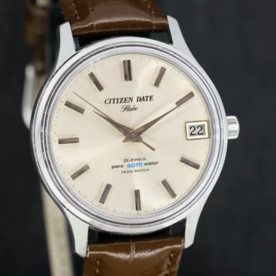
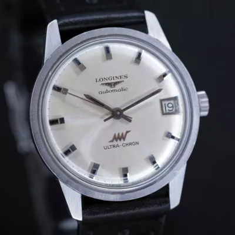
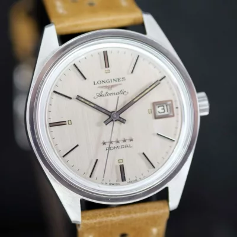
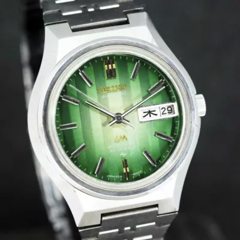
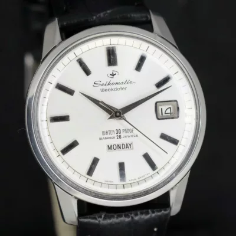
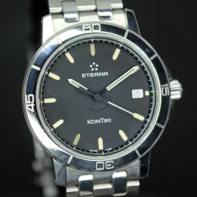

Citizen • Japan
Citizen Date Flake cal.2710, 1966
CAL. 2710 · HAND WOUND · 38 MM
€ 340
Vintage watches, 1950s – 1980s
Each mechanical watch is fully disassembled, cleaned with ultrasound, lubricated and timed before sale. It leaves with a one-year workshop guarantee.
David Broglin, founder & horologist
Real pieces from the inventory. Each one is unique, and sold pieces stay listed as archive.
Full catalogue →
Citizen • Japan
CAL. 2710 · HAND WOUND · 38 MM
€ 340

Longines • Swiss
CAL. 431 · 36,000 BPH · 1967
€ 790

Longines • Swiss
AUTOMATIC · 35 MM · 1969
€ 630

Seiko • Japan
CAL. 5216 · FACETTED CRYSTAL · 1973
€ 520

Seiko • Japan
AUTOMATIC 26J · WEEKDATER · 1964
€ 420

Eterna • Swiss
DIVER HERITAGE · STEEL · CA 1990
€ 590
Four steps before any watch is listed. Original dials and honest patina are kept.
The movement is taken apart, part by part.
Every part goes through an ultrasonic bath.
Moebius synthetic oils, one point at a time.
Regulated and tested for amplitude on a timegrapher.
Founded by David Broglin (Le Vingtième Siècle), Watch & Vintage revives watches from the golden era of watchmaking, the 1950s through the 1980s.
“A vintage watch is a living piece of mechanical history that deserves to be worn with total confidence.”
5.0 on Chrono24, 480 reviews, Trusted Seller
“Sehr zuverlässiger Händler. Watch arrived in immaculate condition, accurately described and running beautifully. Absolute recommendation for vintage collectors.”